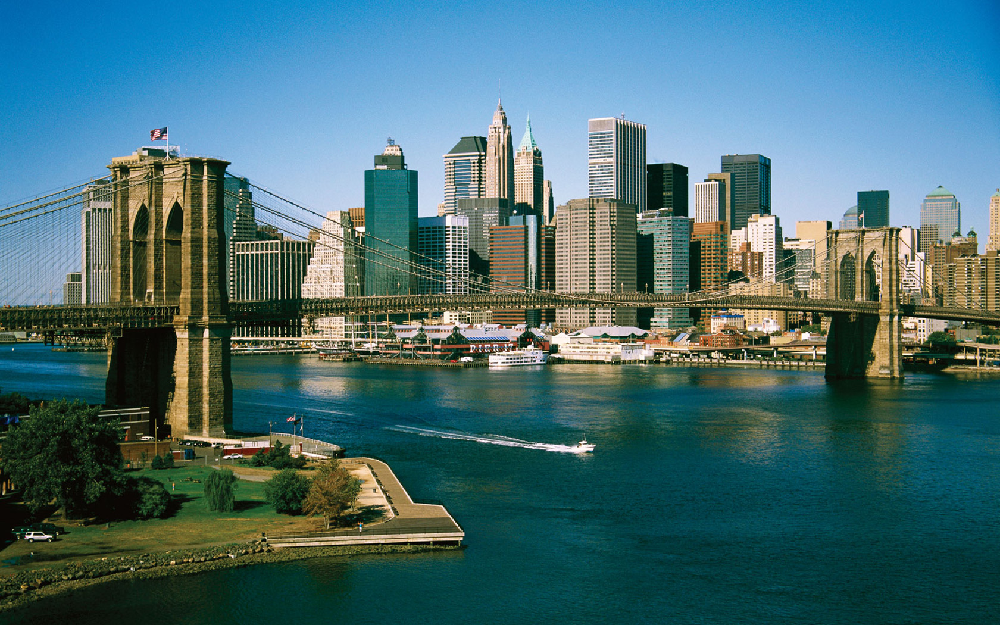
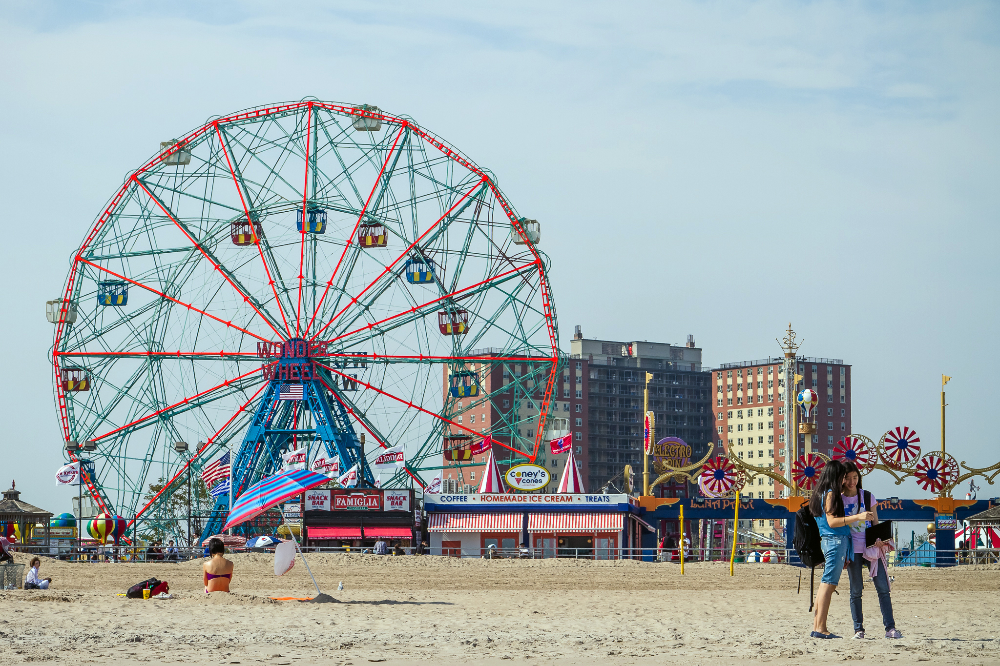
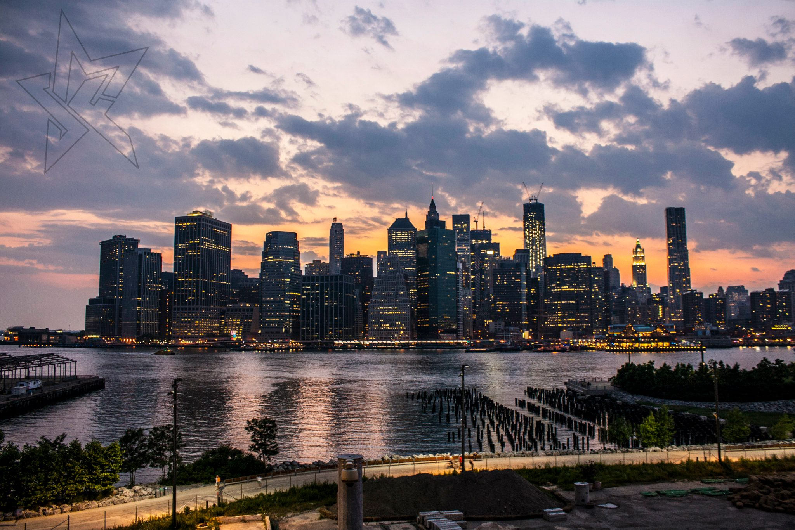
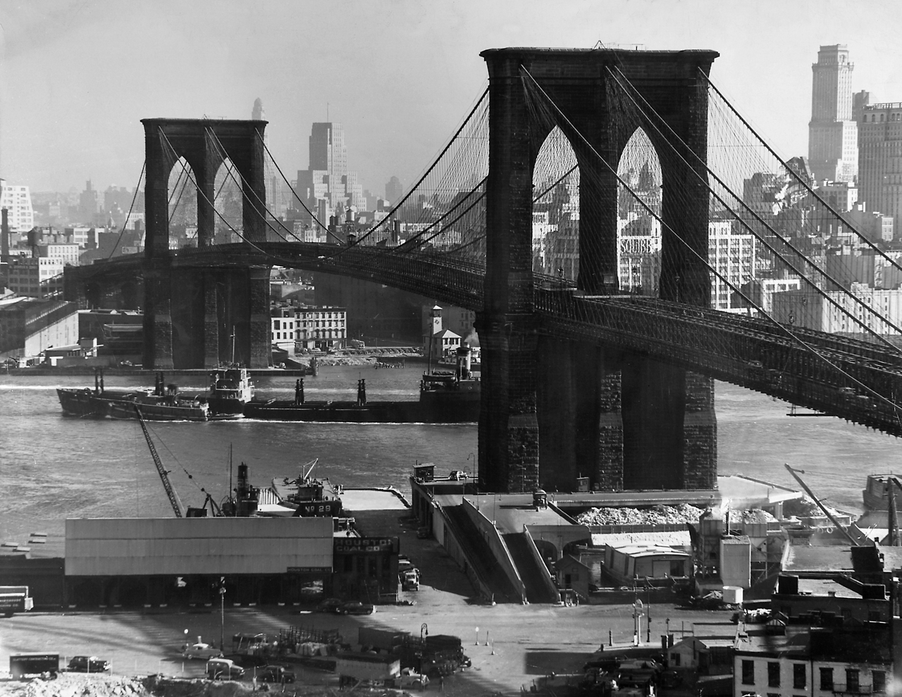

Brooklyn este cel mai populat district al orasului New York, cu o populatie estimata de 2,636,735 in 2015. El margineste districtul Queens la partea de sud-vest a insulei Long . Din 1896, Brooklyn a avut aceleasi granite ca si judetul Kings, cel mai populat judet al statului american New York.
Cu o intindere de 180 km patrati in care apa ocupa 67 km patrati, judetul Kings este al patrulea cel mai mic judet dupa intinderea pe uscat si al treilea dupa intinderea totala, chiar daca este al doilea ca intindere din cele cinci districte ale New York-ului.
Brooklyn a fost un oras incorporat independent pana la 1 Ianuarie 1898 cand, dupa o lunga campanie politica de-a lungul anilor 1890', Brooklyn a fost comasat cu alte orase, districte si judete pentru a forma modernul Oras New York . Totusi, Brooklyn continua sa aibe o cultura diferita. Multi locuitori ai orasului sunt straini.
Aruncati o privire asupra obiectivelor principale din Brooklyn
Vechiul Brooklyn Bridge
Podul Brooklyn este unul dintre cele mai vechi poduri suspendate din Statele Unite. Finalizat în 1883, leagă cartierele Manhattan si Brooklyn din New York City, traversând East River. Având 1.825 m lungime, a fost cel mai lung pod suspendat din lume de la deschiderea sa și până în 1903, și primul pod suspendat pe cabluri din sârmă de oțel.
Brooklyn Bridge a devenit, inca de la inaugurarea sa, un simbol important al New Yorkului, fiind recunoscut drept monument national in anul 1964.
Constructia acestui impresionant pod a inceput in anul 1869 si a durat 14 ani. Planurile pentru construirea unui astfel de pod incepusera inca din anul 1800. In acea perioada, Brooklynul semana mai mult cu un sat, avand o populatie de 400 000 de locuitori, iar New Yorkul avea un singur cartier - Manhattan, care avea o populatie dubla fata de cea a Brooklyn-ului. In acest fel podul era cea mai buna optiune pentru ca Brooklynul sa se dezvolte corespunzator, iar populatia din Manhattan sa se diminueze, migrand spre Brooklyn, podul fiind cea mai buna cale de acces, indiferent de vreme.
Ideea a apartinut lui John Augustus Roebling, imigrant de origine germana, care construise anterior alte poduri suspendate, de marime mai mica. Acesta a pus foarte mult suflet in proiectarea celui mai mic detaliu, considerand ca podul va fi o adevarata opera de arta si un adevarat monument national. In anul 1867 s-a format "The New York Bridge Company", iar pentru construirea podului, Brooklynul a finantat cu 3 milioane de dolari, in timp de New Yorkul a suportat cheltuieli in valoare de doar 1,5 milioane de dolari.
De la un capat la celalalt, Brooklyn Bridge masoara 1825 metri, iar Washington Roebling - fiul lui John Augustus - a creat o parte speciala dedicata celor care vor sa mearga pe jos sau biciclistilor.
Podul din Brooklyn, noaptea
Poate ca nu te-ai astepta sa dai peste un peisaj atat de incantator in inima New Yorkului, dar Gradina Botanica Brooklyn, alaturi de Central Park, sunt cele cele doua inimi verzi ale metropolei americane. Gradina botanica a inceput sa fie amenajata abia la inceputul secolului trecut, iar in timp a devenit unul dintre reperele New Yorkului.
Primele plante din flora nativa a Americii au inceput sa fie plantate in 1911. Abia in 1915, Gradina Botanica Brooklyn prinde consistenta prin amenajarea gradinii japoneze si a iazului sub indrumarea arhitectului peisagist Takeo Shiota. Farmecul locului incepe sa atraga in gradina persoane din high-life-ul New York-ului si, in mai putin de un deceniu, donatiile acestora ajuta la amenajarea unor vaste rocarii, a unor gradini de trandafiri, o colectie impresionanta de arbusti bonsai si a unui colt dedicat operei lui William Shakespeare.
O colectie impresionanta de arbori magnolia infrumuseteaza si acum aleile gradinii, fiind locul preferat al indragostilor si cuplurilor care viziteaza acest loc.
O alta fotografie a gradinei botanice din Brooklyn